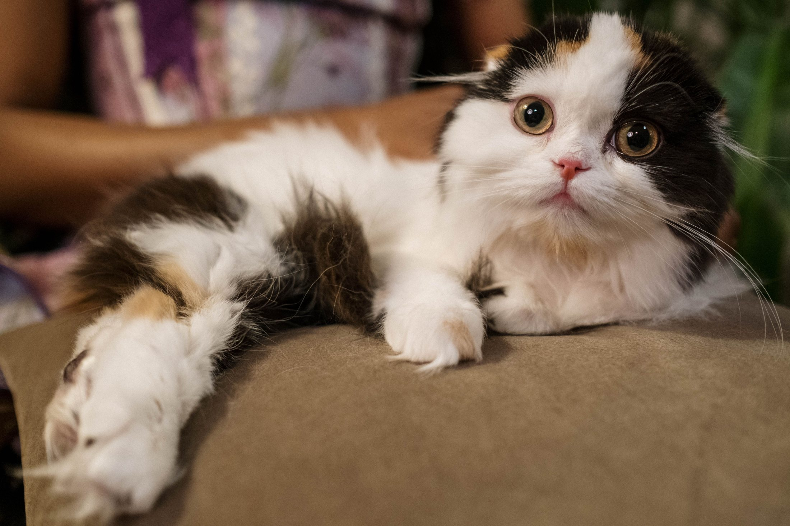
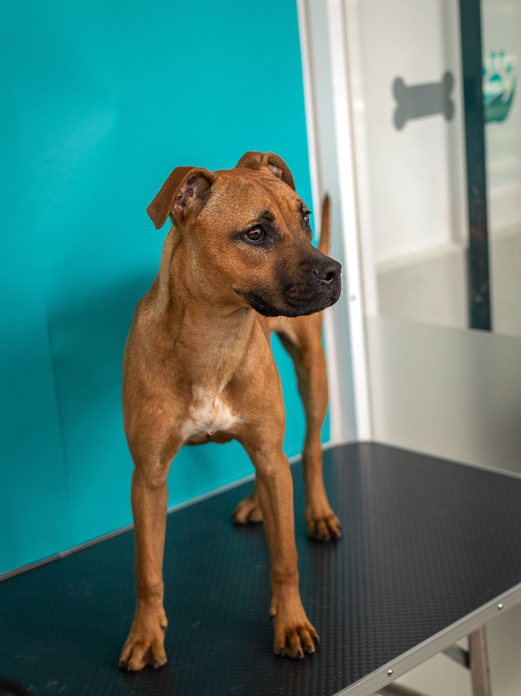
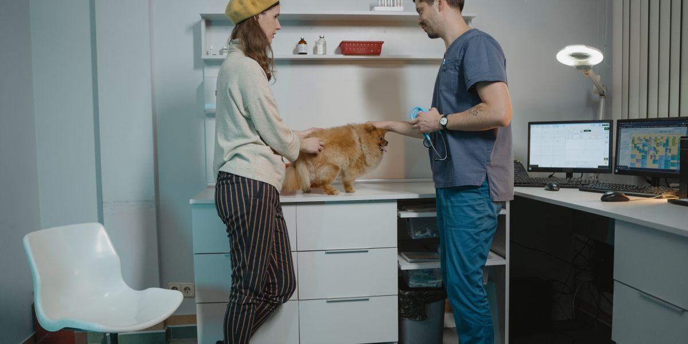
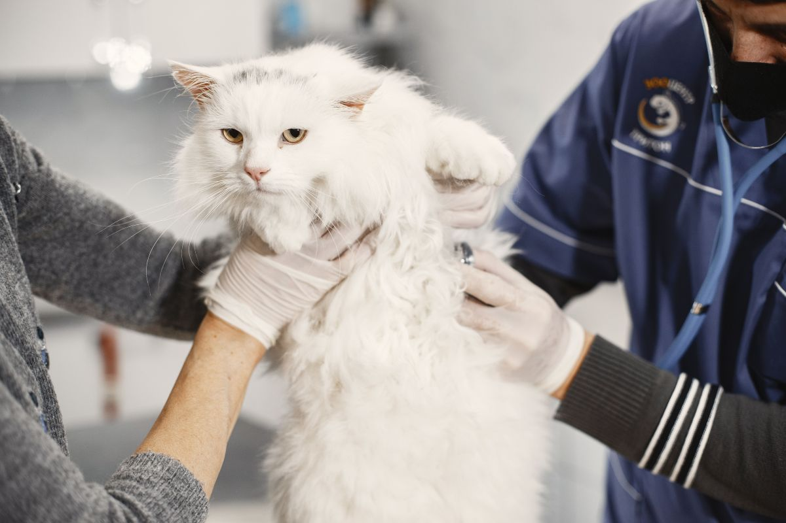
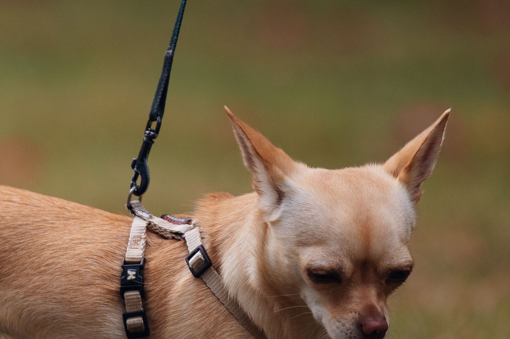
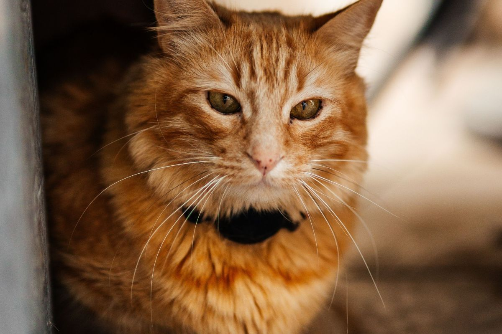
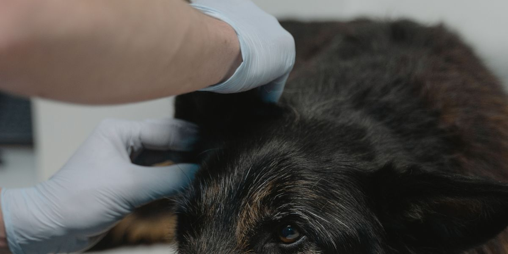

Veterinaria y farmacia · Villarrica
¿Tengo que pedir
hora o me lo
venden y listo?
Es la duda de todo el que necesita algo para su animal un sábado a mediodía. Tener farmacia veterinaria es una ventaja enorme sobre cualquier otra veterinaria de Villarrica — y hoy nadie sabe qué se puede comprar directo.
Llamar y preguntar Ver qué se lleva directo
- nota en Google
- 4,7
- reseñas
- 150
- teléfono
- 9 9219 1529
- 4,7de nota en su ficha de Google
- 150reseñas, contadas el 09-09-2026
- 7categorías de farmacia clasificadas acá abajo
- 0páginas donde eso se pueda leer hoy

Antes de venir
Con receta
o sin receta
Una fila por categoría. La chapita de la derecha dice si eso se lleva directo o si requiere que el animal pase por consulta. Se abre la fila para leer por qué.
Clasificación de ejemplo. Las categorías son las generales del rubro y están puestas para mostrar la forma de la sección. Cuál va en cada columna lo define la veterinaria, que es quien conoce la normativa vigente y responde por ella. Esta página no reemplaza esa firma.
- se lleva directo
- requiere receta o consulta
-
Antiparasitarios externos venta directa
Lo que se usa para pulgas y garrapatas. Suele llevarse directo, pero el producto correcto depende del peso del animal y de su edad — que es exactamente por lo que conviene preguntar en el mesón aunque no haga falta consulta.
falta: confirmar el criterio de la veterinaria
-
Desparasitantes internos venta directa
Los de uso habitual, para la desparasitación de rutina. Acá el peso manda más que en ninguna otra categoría: el mismo producto sirve para un gato y para un perro grande en cantidades muy distintas.
falta: confirmar
-
Alimento y dietas veterinarias receta o consulta
Los alimentos formulados para una condición específica —renal, digestiva, control de peso— no son comida premium: son parte de un tratamiento. Por eso normalmente los indica el veterinario después de revisar al animal.
falta: confirmar cuáles trabajan y bajo qué condición
-
Antibióticos receta o consulta
No se venden sin indicación profesional, y no es burocracia: un antibiótico mal elegido o mal terminado deja al animal peor y contribuye a que después ninguno funcione. Es la categoría donde la respuesta «hay que verlo primero» es la correcta.
falta: confirmar
-
Antiinflamatorios y analgésicos receta o consulta
Es donde más daño hace la automedicación: varios de los que hay en cualquier botiquín de casa son tóxicos para perros y gatos, y algunos lo son gravemente. Nunca se le da a un animal algo del botiquín humano sin preguntar.
falta: confirmar
-
Vacunas se aplican en consulta
No se llevan para poner en la casa: se aplican en el local, con el animal revisado antes y su registro anotado. Ese registro es lo que después sirve para viajar, para una residencia o para una peluquería.
falta: confirmar cuáles ponen y si hay que pedir hora
-
Accesorios, higiene y suplementos venta directa
Collares, correas, shampoo común, arena, juguetes, vitaminas de uso general. Es lo que más se busca un sábado y lo que menos aparece publicado. Decir que existe ya cambia el flujo de gente que entra.
falta: confirmar qué manejan
Ninguna fila nombra un producto, una marca ni un principio activo, y ninguna dice una cantidad. Eso no es un hueco de la página: es que esa información la da un profesional mirando al animal, y ponerla en internet sería exactamente lo contrario de ayudar.

Preguntar por teléfono cuesta dos minutos. Venir sin preguntar puede costar el viaje entero.

Por qué se pregunta el peso
La dosis no se calcula por tamaño: se calcula por kilo
Dos perros que parecen iguales pueden pesar ocho kilos de diferencia, y en un antiparasitario eso es media pastilla de más o de menos. Por eso lo primero que pregunta el mesón no es la raza sino el peso — y por eso conviene llegar sabiéndolo, o pesarlo ahí antes de comprar nada.
Lo que más consultas evita
La dosis
no se adivina
Casi todo lo que se le da a un animal se calcula por su peso. No por su tamaño aparente, no por su raza y no por lo que le sirvió al perro del vecino: por sus kilos, medidos.
-
Dos animales del mismo porte pueden pesar muy distinto
Y la diferencia entre lo que necesita uno y otro no es un detalle. Por eso lo primero que hace cualquier veterinaria es subir al animal a la pesa.
-
Los cachorros cambian de peso todo el tiempo
Lo que correspondía hace dos meses ya no corresponde. Es la causa más común de que una desparasitación no funcione.
-
Los gatos no son perros chicos
Metabolizan distinto, y hay cosas perfectamente seguras para un perro que a un gato le hacen daño. Es el error casero más frecuente y el más grave.
-
El botiquín de la casa no sirve
Varios medicamentos humanos de uso común son tóxicos para perros y gatos. Ante cualquier duda, la respuesta es preguntar antes, no después.
Esta página no da ninguna indicación de tratamiento. No hay una sola cantidad, un solo intervalo ni un solo nombre de producto escrito acá, y no los va a haber. Lo que hay es la razón por la que conviene preguntar — y un teléfono para hacerlo.

Tienen farmacia, y nadie lo sabe
Qué se compra sin receta y qué necesita consulta
Cuando venga
Cuatro cosas que
acortan la visita
Nada de esto es obligatorio y nadie se lo va a exigir en la puerta. Pero con estas cuatro, la conversación en el mesón empieza donde normalmente termina.
-
01
El peso, medido hace poco
Es el dato que decide casi todo. Si no lo tiene, se pesa ahí mismo: son treinta segundos y evita tener que volver.
-
02
Qué le ha dado y cuándo
La caja de lo último que usó, o una foto de la caja hecha con el teléfono. Sirve muchísimo más que tratar de acordarse del nombre.
-
03
El carnet de vacunas, si lo tiene
Y si no lo tiene, decirlo sin vergüenza: la mitad de los animales de la zona no lo tienen, y para eso está la primera visita.
-
04
Con qué lo trae
Los gatos, en jaula de transporte; los perros, con correa. Una sala de espera con otros animales sueltos es donde se producen los sustos.
Esta lista es la del oficio, no una exigencia de este local. Si la veterinaria pide algo distinto —una hora previa, un ayuno, otro documento— acá se cambia en un minuto y queda escrito.


Cómo se ve una veterinaria por dentro
Seis imágenes del oficio, de bancos de uso libre: ninguna es de este local. Están para que la página no sea texto sobre fondo blanco mientras llegan las fotos reales. La procedencia de cada una está en imagenes/FUENTES.txt.






Para preguntar antes de venir
9 9219 1529
Es el número publicado en su ficha de Google. Una llamada de dos minutos antes de venir evita el viaje en vano — y es la única forma de saber si lo que necesita se lleva directo.
- Teléfono
- 9 9219 1529 — verificado en su ficha de Google.
- El botón verde escribe a ese mismo número. Falta confirmar que ahí reciben mensajes.
- Dirección
- Falta
- Horario
- Falta
- Precios
- No hay ninguno en esta página, y no los va a haber acá: los pone la veterinaria donde ella decida.